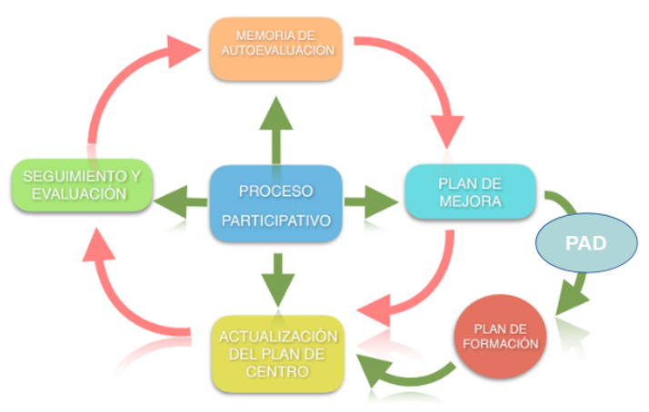

PLAN DE FORMACIÓN CURSO 25-26
INTRODUCCIÓN
EL PLAN DE FORMACIÓN DENTRO DEL PROCESO DE AUTOEVALUCIÓN Y MEJORA CONTINUA
MEMORIA DE ACTIVIDADES FORMATIVAS A DESARROLLADAS A NIVEL DE CENTRO
EVALUACIÓN DEL PLAN DE FORMACIÓN DEL CURSO 24/25
DIAGNÓSTICO: IDENTIFICACIÓN DE NECESIDADES
INFORMACIÓN SOBRE EL DESARROLLO DEL PLAN DE FORMACIÓN PARA EL CURSO 25/26
- INTRODUCCIÓN
A modo de carta introductoria desde el CEP Bollullos-Valverde:
Desde el Centro del Profesorado, se comprende la dedicación y el esfuerzo diario que se realizan en los centros educativos. Por ello, se desea abordar un aspecto fundamental para la mejora educativa: la entrega de los planes de formación en junio.
Se reconoce que junio es un mes de intensa actividad, marcado por evaluaciones, cierres de curso y múltiples gestiones. Sin embargo, se considera que la dedicación a esta tarea en el presente es una inversión estratégica para el futuro de cada centro y del desarrollo profesional del docente. Estos planes no constituyen meramente un trámite administrativo; son una herramienta esencial para la mejora continua.
La importancia de su entrega en este periodo radica en la capacidad que ofrece para planificar la formación del próximo curso de manera más precisa y alineada con las necesidades reales. La memoria de evaluación que elaboran es un documento de gran valor informativo, pues en ella se recogen tanto los logros alcanzados como las áreas identificadas con potencial de crecimiento. El análisis de dicha memoria, junto con las propuestas presentadas, permite realizar una detección de necesidades rigurosa, posibilitando así la oferta de actividades formativas, talleres y recursos que sean verdaderamente pertinentes y útiles en el contexto de su práctica docente.
Esta iniciativa trasciende el mero cumplimiento de un requisito; se configura como una estrategia poderosa para el progreso de cada centro educativo. La formación actúa como un catalizador para la innovación, la implementación de nuevas metodologías y la resolución de los desafíos que emergen en el aula. La formación más efectiva es aquella que surge de las inquietudes propias del claustro y de un análisis fundamentado de las necesidades específicas del centro.
Por tanto, desde el Centro del Profesorado, se anima encarecidamente a cumplimentar y entregar sus planes de formación durante este mes de junio. Se concibe esta acción como una oportunidad inestimable para que, de manera colaborativa, se continúe construyendo una educación pública andaluza de calidad, capaz de inspirar y preparar a los alumnos para los desafíos del futuro. Se cuenta con su valiosa contribución para seguir avanzando.
Una vez concluido el curso 24-25 y tras haber trabajado en base a los solicitado en la memoria de autoevaluación 23-24 y en la revisión del plan de formación del PGA 23-24.
Hemos trabajado centrándonos en la autoformación individual para tratar de abordar capítulos específicos que se realizaban con anterioridad:
+ Se decidió tratar de compartir buenas prácticas que se realiza en el centro y que creemos deben hacerse extensivas al claustro, solo se ha abordado aspectos relacionados con la resolución de problemas .
+ Se han conseguido abordar formaciones concretas específicas para Ed. Infantil, Ed. Física y otras áreas, en función de las necesidades individuales del profesorado.
+ Se ha conseguido ahondar de manera individual, sobretodo el profesorado de Ed. Infantil en la mejora en las metodologías activas.
Tomaremos como referencia las propuestas que se han hecho en los diversos documentos de final del curso:
PROPUESTAS PARA EL CENTRO DESDE EL EQ. DIRECTIVO
Aplicaciones y uso de la IA para la mejor docente, contextualización, creación de situaciones de aprendizaje mejora en la atención a la diversidad y pautas DUA, mejora competencial de las tareas y creación de recursos.
PROPUESTAS CLAUSTRO
- El Aula integración demanda formación relacionada con alumnado TEA.
- 3º ciclo formación práctica en inteligencia artificial. refrescar el cuaderno de séneca y evaluación criterial.
- 2º ciclo formación relacionada con el razonamiento matemático y la
- resolución de problemas.
- 1º ciclo y ed infantil seguir en la misma línea de formación indivual.
2 . EL PLAN DE FORMACIÓN DENTRO DEL PROCESO DE AUTOEVALUACIÓN Y MEJORA CONTINUA
La mejora continua es un proceso fundamental en la comunidad educativa. Se trata de un esfuerzo cooperativo para analizar, comprender e interpretar la actividad del centro. Esto nos permite identificar tanto nuestras fortalezas como nuestras debilidades en la organización y el funcionamiento, y a partir de ahí, proponer mejoras que enriquezcan la práctica educativa.
Este enfoque de mejora continua debe tener un fuerte carácter formativo. Es esencial que los docentes cuenten con la capacitación necesaria para afrontar los desafíos con profesionalidad y solvencia. Por ello, el proceso de mejora continua se complementa con un Plan de Formación. Este plan se ha diseñado para abordar las necesidades formativas identificadas tanto en el Plan de Mejora como en el Plan de Actuación Digital, asegurando que las propuestas y actuaciones se puedan llevar a cabo de manera eficaz y eficiente.

Una vez concluido el curso 24-25 y tras realizar las valoraciones de los diferentes órganos colegiados, la mayoría del claustro considera positiva las actuaciones y la metodología empleadas para desarrrolar l formación , si bien también se ha constatado que sería necesario abordar de forma común ciertos aspectos que deben favorecer una mejora en la dinámica del centro favoreciendo la coordinación docente y desarrollando una mejora en el trabajo de aula. Además trataremos de potenciar las buenas prácticas docentes.
- MEMORIA DE ACTIVIDADES FORMATIVAS A NIVEL DE CENTRO
Este apartado pretende analizar el camino formativo a nivel de claustro durante en el curso 25-26. Teniendo en cuenta las necesidades detectadas en la memoria de autoevaluación del curso anterior, así las propuestas incluidas en el Plan de Mejora del presente, las actuaciones del Plan de Actuación Digital y la actualización normativa en torno a la LOMLOE se han desarrollado en nuestro centro las siguientes actividades formativas:
|
TIPO DE FORMACIÓN |
DEMANDADAS |
DESARROLLADAS |
||
|
FORMACIONES ACORDADAS CON EL CEP |
AUTOFORMACIÓN |
a) Formación en Centro |
|
|
|
b) Grupos de trabajo |
|
|
||
|
|
|
|||
|
|
|
|||
|
|
|
|||
|
CURSOS |
|
|
||
|
OTRAS MODALIDADES |
|
|
||
|
FORMACIÓN ENTRE IGUALES U ORGANIZADAS POR EL CENTRO |
PROYECTOS (INVESTIGACIÓN EDUCATIVA, INNOVACIÓN, ELABORACIÓN DE MATERIALES, ESCUELAS MENTORAS, TELÉMACO) |
|
|
|
|
OTRAS FORMACIONES ENTRE IGUALES |
|
|
||
|
BUENAS PRÁCTICAS A GENERALIZAR |
EL TRABAJO CON RESOLUCION DE PROBLEMAS DE 2º CICLO PROGRAMA SIEMPRE ATENTO DE 4º COORDINACIÓN DOCENTE DE ED. INFANTIL |
|||
|
PLANES Y PROGRAMAS EN LOS QUE HA PARTICIPADO TU CENTRO: |
ESCUELA ESPACIO DE PAZ, PLAN DE LECTURA BIBLIOTECA, TDE , COEDUCACIÓN, CENTRO BILINGÜE, PRACTICUM, HUERTO ESCOLAR, ECOESCUELA, SALUD , AULA DE CINE INTEGRÁNDOLOS EN LAS SD. APRENDIZAJE. |
|||
- EVALUACIÓN DEL PLAN DE FORMACIÓN DEL CURSO 25-26
Con la intención de conocer el desarrollo del Plan de Formación os dejamos el siguiente cuadro, en el que podéis aportar aquella información relevante y que consideréis valiosa para planificar el desarrollo formativo para el próximo curso.
|
RELACIÓN ENTRE LAS NECESIDADES DETECTADAS POR EL CENTRO EN EL INFORME DE RÚBRICA O LA MEMORIA DE AUTOEVALUACIÓN Y LOS OBJETIVOS A CONSEGUIR PLANTEADOS EN EL PLAN DE FORMACIÓN (LOGROS, DIFICULTADES Y PROPUESTAS DE MEJORA) |
SE HA DETECTADO UNA GRAN POTENCIALIDAD PARA EL ASPECTO DOCENTE CON UN USO EDUCATIVO DE LA IA, DE FORMA QUE SE PUEDA CONTEXTUALIZAR , ADAPTAR, MEJORAR LOS PROCESOS DE ENSEÑANZA APRENDIZAJE, MEJORANDO LA PLANIFICACION Y LA INTERVENCIÓN DOCENTE. EN MUCHOS CASOS LOS DOCENTES NO SE VEN CAPACES DE ADAPTAR LAS SITUACIONES DE APRENDIZAJES Y SU PRACTICA DIARIA A LAS CARACTERISTICAS DEL ALUMNO/A Y A LOS QUE TIENEN DIFICULTADES O NEAE.
ES VITAL DESARROLLAR UNA CONCIENCIA DE EQUIPO DOCENTE Y DE TRABAJO EN EQUIPO, TRATANDO DE IMPREGNAR DE LA FILOSOFIA DEL PROYECTO EDUCATIVO A TRAVES DE LAS BUENAS PRÁCTICAS DOCENTES, DEL BANCO DE RECURSOS Y LA COORDINACION DE LOS PROYECTOS .
ELABORAR UNA GUIA BASICA DEL FUNCIOMIENTO DEL CENTRO PARA PODER HACER UNA ACOGIDA MAS PESOBAL AL NUEVO PROFESORADO, HACERLA UTIL Y ACCESIBLE PARA PODER ATENDER LAS DUDAS PERSONALES SIN ATROPELLAR DE INFORMACION CONTINUAMENTE.
LAS NUEVAS INSTRUCCIONES SOBRE RAZONAMIENTO MATEMATICO Y LA RESOLUCION DE PROBLEMAS HAN CREADO DUDAS ENTRE LOS DOCENTES Y DEBEMOS DAR RESPUESTA DE CÓMO ABORDARLO, PARA ELLO HABRA QUE FORMARSE Y DAR NOCIONES QUE PERMITAN FORMARSE EN MAYOR PROFUNDIDAD.
CADA VEZ HAY MAS ALUMNADO CON CARACTERISTICA TEA EN EL CENTRO Y DEBEMOS PREPARAR AL CLAUSTRO Y DOTAR DE ESTRATEGIAS PARA ABORDAR SU TRABAJO EN EL AULA.
LA MYOR DIFICULTAD EXISTENTE ES DAR RESPUESTAS A TODAS LAS PETICIONES TRATANDO DE HACERLO EN SESIONES COMUNES, ES IMPOSIBLE ABORDAR LA FORMACIÓN QUE PERMITA RESPONDER A TODO LO PLANTEADO Y HACERLO EN LOS POCOS HUECOS DISPONIBLES DE REUNIONES. |
|
ADECUACIÓN DE LA MODALIDAD FORMATIVA (LOGROS, DIFICULTADES Y PROPUESTAS DE MEJORA) |
LA MODALIDAD ELEGIDA SERÁ TRATAR DE DAR UNAS PAUTAS BASICAS COMUNES Y DESPUES FACILITAR DONDE PODER AMPLIAR Y ESPECIALIZARSE CON MAYOR PROFUNDIDAD DE FORMA INDVIDUAL O GRUPAL SI ALGUIEN LO DECIDIESE. EN BASE A LAS DEMANDAS EL CLAUSTRO ES PARTIDARIO DE LA FORMACION INDIVIDUAL.
|
|
IMPACTO DE LA FORMACIÓN: RESULTADOS OBTENIDOS, PROPUESTAS DE ACCIONES A GENERALIZAR, POSIBLES MODIFICACIONES A REALIZAR EN EL PROYECTO DE CENTRO, ETC. |
EL IMPACTO QUE SE BUSCA ES QUE SE CONSIGA MEJORAR LAS SITUACIONES DE APRENDIZAJE Y LA PRACTICA DOCENTE, OPTIMIZANDO LA ESTRUCTURACION , ORGANIZACIÓN Y APLICACIÓN DE RECURSOS EN BASE AL USO EDCATIVO DE LA IA. |
DIAGNÓSTICO: IDENTIFICACIÓN DE NECESIDADES
El diagnóstico siempre debe ser el punto de partida de cualquier proyecto. Por ello debemos analizar las necesidades concretas de nuestro entorno, presentándose así la formación como una de las estrategias para solventar dichas necesidades, entendiendo siempre la formación como una herramienta indispensable en los procesos de mejora y es consensuada. En ocasiones las necesidades pueden ser detectadas por todos los sectores de la comunidad educativa o por agentes externos, por ello se insta al responsable de la entrega de los Planes de Formación a realizar un proceso de detección de necesidades grupal, que implique al mayor número de agentes partícipes de la comunidad educativa y que sea conocido y consensuado por todos.
|
DESCRIPCIÓN DE LA NECESIDAD |
Instrumento usado para la detección. (memoria autoevaluación, cuestionario, evaluaciones trimestrales, reuniones departamentos, Consejo escolar …)
|
Detección de la necesidad (interna, externa) |
|
DESARROLLAR FORMACION BASICA EN IA · CONTEXTUALIZACIÓN · CREACION DE SITUACIONES DE · APRENDIZAJE · MEJORA EN LA ATENCION A LA DIVERSIDAD · PAUTAS DUA · MEJORA COMPETENCIAL · RECURSOS |
VALORACION DEL PGA Y MEMORIA DE AUTOEVALUACION |
INTERNA |
|
FORMACIÓN EN EL ABORDAJE EN EL AULA DEL ALUMNADO TEA |
MEMORIA DE AUTOEVALUACION Y EVALUACION TDE, COMPDIGEDU |
INTERNA |
|
BUSQUEDA DE FORMACIÓN EN RAZONAMIENTO Y RESOLUCION DE PROBLEMAS MATEMATICOS |
VALORACION DEL PGA Y MEMORIA DE AUTOEVALUACION |
INTERNA |